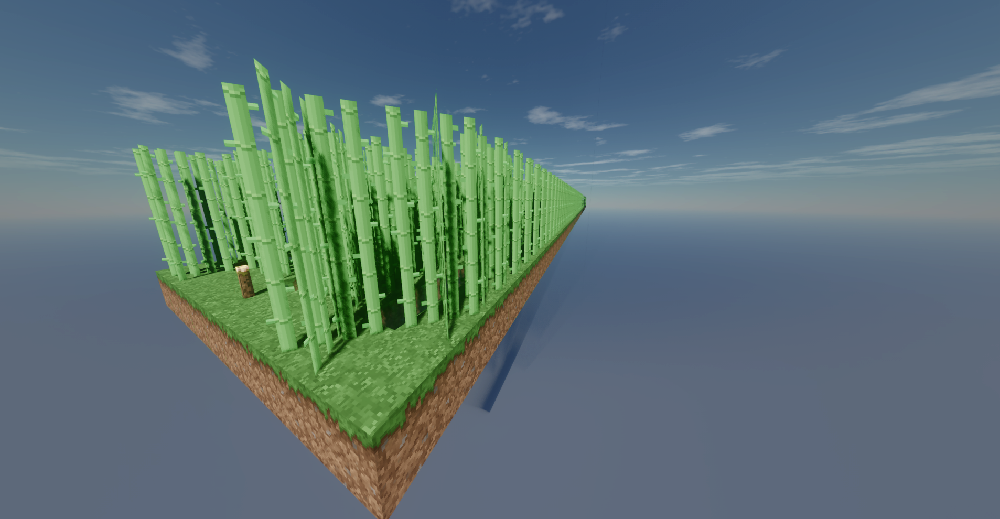
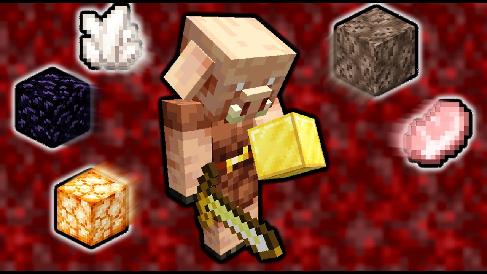
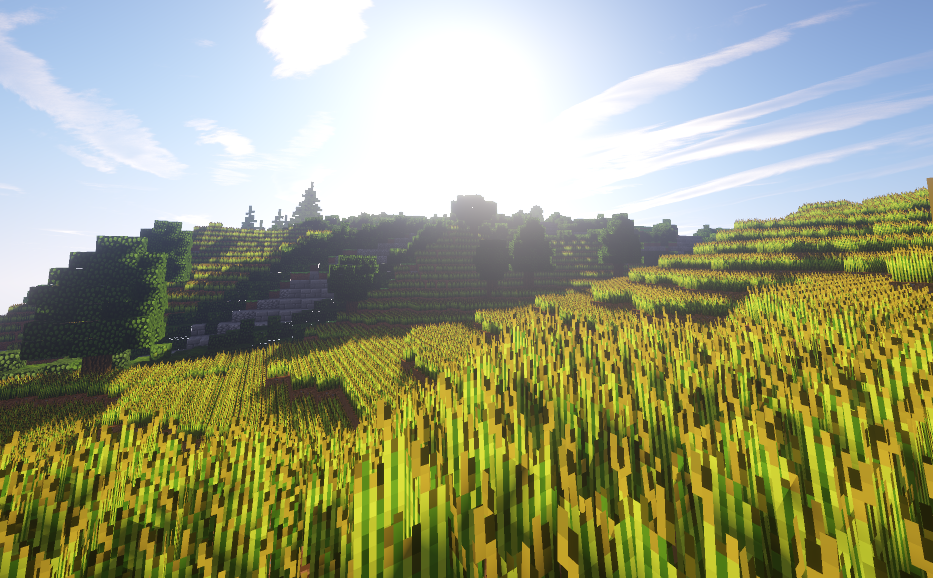

-
Schema de construction

1.11
Ferme à canne à sucre automatique
La ferme à canne à sucre automatique est une ferme
facile à realiser et tres facilement
adaptable a des extension et permet de
recolter une bonne quantiter de canne a sucre de fasson 100% automatique

-
Schema de construction


1.16. 2 ->last version
Ferme d'échange a piglins
La ferme a d'echange a piglins est une machine peux connue mais
tres pratique pour recolter
des item aleatoire donc pratique
en debut de partie seul inconvenant est qu'il faut aller
dans le nether cependant elle est tres peux couteuse en resource

-
Schema de construction

1.11
Ferme a blé
Ce Design de ferme a ble n'est pas le plus efficace car elle pourrait etre ameliorer avec
un piston collant mais elle reste tres peux couteuse pour un debut de partie
